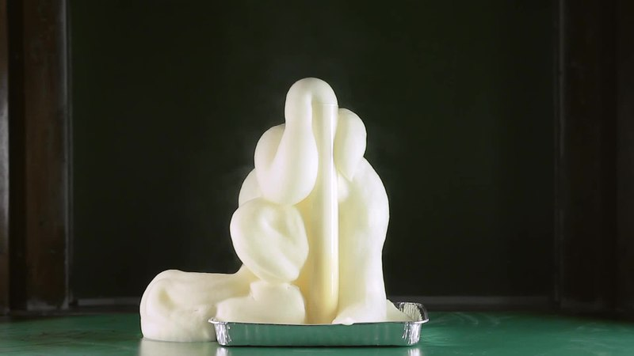

Troll Toothpaste

Description
Troll Toothpaste is a warm, foamy concoction that is great at getting all the placque off of disgusting troll teeth. It is best to prepare this potion outdoors or in the confines of a large pan or dish to contain the bubbling brew.
Ingredients
- 1 tsp ground Bat Toenailsm (dry active yeast)
- 2 Tbsp Basilisk Venom (warm tap water)
- 1/2 cup Poison Mushroom extract (6% hydrogen peroxide)
- A few drops of Spider Venom (dish soap--not antibacterial)
- Color tablet (optional)
Steps
- Mix the ground Bat Toenails with the warm Basilisk Venom in a small bowl and set aside.
- In a bottle with a narrow neck, add Poison Mushroom Extract, color tablet, and Spider Venom.
- Swirl bottle carefully to mix the ingrediants.
- Use a funnel to add the Bat Toenails mixture to the liquid in the bottle, and then quickly remove the funnel.
- Troll Toothpaste will foam up and explode out of the bottle.